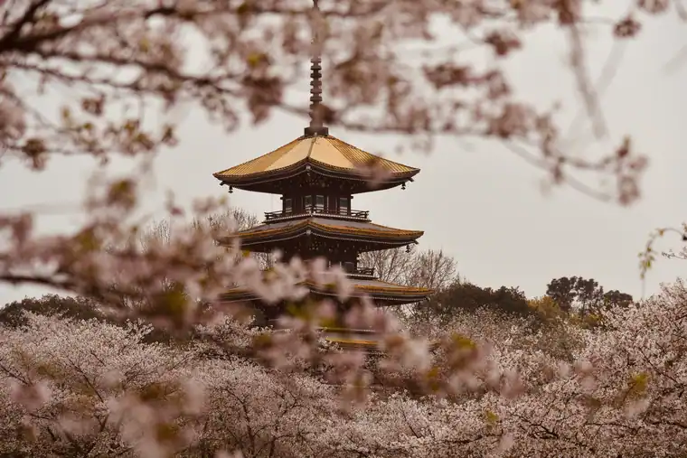
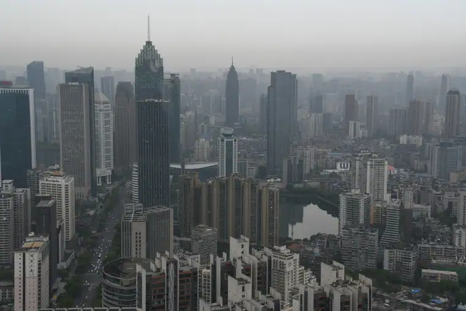
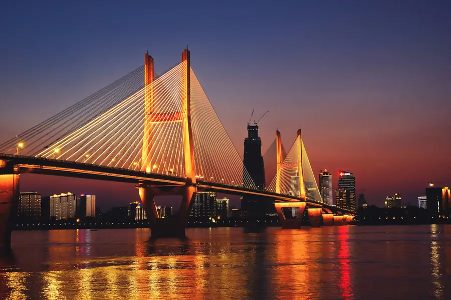

Chat on WhatsApp

Scan the QR code with WhatsApp to add us and start chatting.
Or add us directly: +86-155-2777-1775
Open WhatsApp ChatTianhe (WUH) to downtown, Yellow Crane Tower, and East Lake with licensed professional driver. China's central crossroads. Fixed price. Reliable Wuhan car service for every trip. Book a private car in Wuhan with just a few clicks. Pick-up and drop-off in Wuhan, door to door.
Real scenes from Wuhan — landmarks, streets and everyday life.



The "Chicago of China" — where the Yangtze and Han Rivers meet, creating a city of rivers, lakes, and bridges. Reliable Wuhan car service for every trip. Book a private car in Wuhan with just a few clicks. Pick-up and drop-off in Wuhan, door to door.
The name "Wuhan" (武汉) combines the names of the three cities that merged in 1927: Wuchang ("Military Prosperity," the cultural and educational center), Hankou ("Han River Mouth," the commercial hub), and Hanyang ("South of the Han River," the industrial base). The city sits at the confluence of the Yangtze and Han Rivers, making it the strategic crossroads of central China. Known as the "Chicago of China" for its role as a transportation hub.
Wuhan is one of China's most important educational centers with over 80 universities. Wuhan University (founded 1893, ranked top 10 in China) is famous for its beautiful campus and cherry blossoms. Huazhong University of Science and Technology (HUST) is one of China's premier engineering schools. The city produces over 300,000 graduates annually, making it a major talent hub. The Optics Valley (Guanggu) is China's premier photonics and optics research center.
Wuhan's metro system has 11 lines covering 400+ km, connecting the three historic districts (Wuchang, Hankou, and Hanyang). The city is a major rail hub with high-speed connections to Wuhan (4 hours), Shanghai (5 hours), and Guangzhou (4 hours). The Yangtze River bridges and tunnels connect the three districts, creating a unique urban geography. Our private car service is the most convenient way to navigate between districts, especially with luggage.
Wuhan sits at the confluence of the Yangtze River (the world's third-longest river) and the Han River. The city is known as the "City of Lakes" with over 100 lakes, including the vast East Lake (the largest urban lake in China). The surrounding area is part of the Jianghan Plain, one of China's most fertile agricultural regions. Wuhan has a humid subtropical climate with hot summers and cold winters.
Plan your route before you arrive. Download the official metro maps and city maps below.
wuhan runs from 4.0 °C in January to 29.1 °C in July, an annual average of 17.1 °C and about 1,316 mm of rain across the year. The chart and the four seasons below are built from the city’s own climate record.
July is the warmest month at 29.1 °C and January the coldest at 4.0 °C, a spread of 25.1 °C. Rain is heaviest in July, which averages 228 mm, and lightest in December at 30 mm. Summer is the wettest stretch of the year at about 564 mm in total, while Winter is the driest at 144 mm.
For most travellers the winter window is the one to plan around: it carries only about 144 mm of rain across the whole season, against roughly 564 mm in summer. The 25.1 °C gap between the extremes also means the shoulder months either side of summer sit in a comfortable band, with many days in the high teens or low twenties.
Private transfers are booked by pickup time rather than by season, so the weather only changes what you do with the hours you have. In January a driver waiting at the terminal matters, because the afternoon average sits around 4.0 °C; by July the same day averages 29.1 °C and the car is most of the day’s comfort.
March, April, May · avg 17.0 °C · 394 mm rain
March averages 10.9 °C and May 22.6 °C, so the season warms fast.
June, July, August · avg 27.9 °C · 564 mm rain
July peaks at 29.1 °C, the warmest point of the whole year.
September, October, November · avg 18.1 °C · 215 mm rain
September averages 24.1 °C and November 11.9 °C.
December, January, February · avg 5.6 °C · 144 mm rain
January bottoms out at 4.0 °C, the coldest point of the whole year.
Discover the historic crossroads of central China with a private driver.
1,800 Years Old • Wuhan Icon
One of China's most famous towers, immortalized in poetry by the Tang Dynasty poet Cui Hao. The current tower is a modern reconstruction from 1985, but it offers panoramic views of the Yangtze River and the Wuhan skyline. Your driver can drop you at the entrance and pick you up after your visit.
China's Largest Urban Lake • 5A Scenic Area
The largest urban lake in China, six times the size of Hangzhou's West Lake. The scenic area includes the Moshan Hill, the Cherry Blossom Garden, and the Chu Kingdom platform. In spring, the cherry blossoms are spectacular. Your driver can take you on a scenic drive around the lake and stop at the best viewpoints.
National Museum • Ancient Chu Culture
One of China's finest museums, housing over 200,000 artifacts from the ancient Chu Kingdom. The highlight is the Marquis Yi of Zeng's Tomb, featuring a complete set of bronze bells (Bianzhong) that are over 2,400 years old. The museum offers daily musical performances using replica bells. Admission is free.
First Bridge • Soviet-Era Engineering
The first bridge across the Yangtze River, completed in 1957 with Soviet assistance. It connects Wuchang and Hanyang, and is a symbol of Wuhan's engineering prowess. The bridge offers pedestrian walkways with stunning views of the river. Your driver can take you for a scenic drive across the bridge at sunset.
Most Beautiful Campus • Spring Blooms
Wuhan University's campus is considered one of the most beautiful in China, especially in spring when the cherry blossoms are in full bloom. The university's castle-like buildings are surrounded by hills and lakes. Your driver can take you on a scenic tour of the campus during cherry blossom season (March–April).
Hankou's Main Street • Historic Architecture
Hankou's most famous pedestrian street, lined with historic European-style buildings from the colonial era. The street features a mix of international brands, local boutiques, and street food vendors. The nearby Jianghan Gate is a historic landmark. Your driver can drop you at the entrance and pick you up after your shopping and dining.
Fixed-price private car service for Wuhan's most popular journeys.
~25 km · 35–50 min
Tianhe International Airport (WUH) is Wuhan's main airport and one of central China's busiest. Our private car picks you up at the arrival hall, tracks your flight for delays, and delivers you directly to your hotel in Wuchang, Hankou, or Hanyang districts. No need to navigate the metro with luggage across the three districts.
4 hours · Custom itinerary
Visit Wuhan's two most iconic attractions in one trip. Your driver takes you to the Yellow Crane Tower for panoramic views of the Yangtze River, then drives you to East Lake for a scenic walk or boat ride. The driver waits at each location and knows the best route between the two attractions.
~300 km · 4 hours · 10-hour trip
Visit the world's largest hydroelectric dam on the Yangtze River. Your driver takes you from Wuhan to Yichang, where you can visit the Three Gorges Dam Visitor Center and take a boat tour of the dam. A long but rewarding day trip for engineering enthusiasts. Includes scenic drives along the Yangtze River.
8 hours · Business vehicle · Custom itinerary
Visit the Yellow Crane Tower, East Lake, Hubei Provincial Museum, and Jianghan Road in one day. Cross the Yangtze River Bridge and experience all three districts (Wuchang, Hankou, Hanyang). Your driver knows the best routes and timing. Add a Yangtze River cruise for an unforgettable evening.
Published rates, no estimate games. Check the numbers yourself before you book — and the price you see is the price your driver is paid from.
Published rates from our 2026 quote sheet. Renminbi first, USD for reference at 1 USD = ¥7.10. Every price below already includes tolls, parking, driver service and free airport waiting time — nothing is added on the day.
One flat fare for airport pickup, drop-off or city-to-city — intercity costs the same as the airport run. 35 km included; beyond that we charge by the minute and the kilometre at the rates shown.
| Vehicle | Seats | Bags | Fixed fare | USD | Beyond 35 km |
|---|---|---|---|---|---|
| 4座 经济型专车 | 4 | 2 | ¥240 | ≈ $33.8 | ¥1.22/min · ¥5.41/km |
| 4座 舒适型专车 | 4 | 2 | ¥343 | ≈ $48.31 | ¥1.34/min · ¥5.99/km |
| 6座 商务车 | 6 | 3 | ¥430 | ≈ $60.56 | ¥1.43/min · ¥6.37/km |
| 8-11座 商务车 | 11 | 4 | ¥749 | ≈ $105.49 | ¥1.86/min · ¥8.28/km |
| 12-18座 商务车 | 18 | 4 | ¥796 | ≈ $112.11 | ¥2.07/min · ¥9.24/km |
| 19-55座 大巴 | 55 | 5 | ¥905 | ≈ $127.46 | ¥2.36/min · ¥10.51/km |
Book the car and the hours, keep the car for the day. Unused kilometres can be carried into the next tier, so a long day never turns into a penalty. The driver stays with you — you set the stops.
| Vehicle | 2h / 35km | 4h / 50km | 6h / 75km | 8h / 100km | 10h / 125km |
|---|---|---|---|---|---|
| 4座 专车 | ¥286 | ¥468 | ¥624 | ¥663 | ¥754 |
| 6座 商务车 | ¥377 | ¥611 | ¥806 | ¥858 | ¥975 |
| 8-11座 商务车 | ¥543 | ¥880 | ¥1161 | ¥1236 | ¥1404 |
| 12-18座 商务车 | ¥651 | ¥1056 | ¥1393 | ¥1483 | ¥1685 |
| 19-55座 大巴 | ¥782 | ¥1267 | ¥1671 | ¥1779 | ¥2022 |
Six things you get with every booking — in Wuhan and across all 346 cities on the platform.
Chinawheely is a registered travel agency (L-HUB-101603). Your booking is a travel contract with a licensed operator — not a broker handing your number to whoever answers the phone.
The price you see is the price you pay. Tolls, parking, driver service and airport waiting time are already inside it. No surge pricing, no meter, no cash-on-the-day surprise.
We watch your flight number in real time. If it lands late or is delayed, your driver shifts with it and the waiting time stays on us — not on your bill.
Every car is driven by a professional local driver who knows the routes, the shortcuts and the parking that actually works near the attractions — with English communication and a name board on arrival.
Plans move. Reschedule or cancel any booking free of charge up to 48 hours before your scheduled pickup, straight from your confirmation link.
One message reaches a person who can re-price, re-route or re-plan your trip on the spot. No ticket queue, no chatbot loop.
Pick your vehicle, see the fare line by line, and pay by PayPal or Alipay. Free changes up to 48 hours before pickup — or ask on WhatsApp and we will hold a car for you.
Getting to Wuhan by air, rail, or road
North of the city · 30 km to Yellow Crane Tower
WUH is central China's largest airport and a major hub for the region. It has three terminals: Terminal 1 (charter and regional), Terminal 2 (domestic), and Terminal 3 (international and major domestic, opened in 2017). The airport metro line connects to the city center in 40 minutes, but with luggage a private car is far more comfortable. By road, expect 45–60 minutes to Wuchang or Hankou districts.
Growing capacity · Fourth terminal planned
The airport is expanding rapidly to serve Wuhan's growing role as a transportation hub. Current terminals handle flights to most major Asian cities and European hubs. Our drivers monitor terminal assignments and will meet you at the correct arrival hall.
High-speed hub · 30 min to Yellow Crane Tower
The main station for high-speed trains to Wuhan (4.5 hours), Shanghai (5 hours), Guangzhou (4 hours), and Xi'an (4.5 hours). It's one of China's largest and most modern stations. A private car pickup is recommended as the station is vast.
Historic station · Central Hankou
Located in the heart of Hankou, this station serves conventional trains to western and northern China. Its central location makes it convenient for hotels in the Jianghan and Jiang'an districts.
Southern trains · Near Yellow Crane Tower
Located near the famous Yellow Crane Tower, this station serves conventional trains to southern and eastern China. It's convenient for travelers staying in Wuchang or visiting the tower.
Newest station · Optics Valley
Opened in recent years, this station serves the Optics Valley area and high-speed trains on the Wuhan–Jiujiang line. It's convenient for the technology district and eastern suburbs.
Airport connection · Same location
The airport has its own high-speed rail station connecting to Wuhan's urban rail network. This makes transferring between flights and trains convenient, though a private car is still the most comfortable option for reaching your hotel.
We meet you at the exit with a name board and help with luggage.
Book Station TransferMeet the traditional arts that have defined Wuhan for centuries — and the artisans keeping them alive.
UNESCO-listed intangible heritage. Han Opera is one of China's oldest opera forms, originating in Hubei over 400 years ago. It features bold singing, acrobatic fighting, and elaborate face painting. The "chu" style is known for its high-pitched, resonant vocals.
Where to experience it: Wuhan Han Opera Theatre or the Hubei Provincial Theatre. Ask your driver to book tickets.
Hubei has a 2,000-year tradition of lacquerware production dating back to the Chu Kingdom. The carved and painted lacquer pieces feature intricate designs of dragons, phoenixes, and cloud patterns. The technique involves building up dozens of layers of lacquer and then carving them.
Where to find it: Hubei Provincial Museum, Wuhan Museum of Intangible Cultural Heritage, or select craft shops on Jianghan Road.
The famous Bianzhong bronze bells from the Tomb of Marquis Yi of Zeng (5th century BC) are one of the world's oldest musical instruments. Modern artisans create replica bell sets that can be played. The original bells are displayed at the Hubei Provincial Museum.
Where to experience it: Hubei Provincial Museum has daily performances on replica bells. Don't miss the 15-minute musical demonstration.
Traditional Hubei embroidery is known for its fine needlework and vibrant colors, often depicting local landscapes, flowers, and birds. The style is influenced by the Chu Kingdom's artistic traditions, with flowing, dynamic compositions.
Where to find it: Wuhan Museum of Intangible Cultural Heritage and select craft shops in the old city.
The traditional Chinese bamboo flute (dizi) has been crafted in the Wuhan region for centuries. Master flute makers select bamboo by age, density, and resonance, then carefully bore and tune each instrument by hand. The Hubei-style flute is known for its bright, clear tone.
Where to find it: Traditional music shops on Qiyi Road or the Wuhan Conservatory of Music area.
Hubei paper cutting is characterized by bold, flowing designs featuring fish, lotus flowers, and phoenixes. The style reflects the region's connection to the Yangtze River and its agricultural heritage. Red paper cuttings are traditionally displayed during Spring Festival.
Where to find it: Wuhan Museum of Intangible Cultural Heritage, folk art shops on Tanhualin Street, or during temple fairs.
Insider tips to help you experience Wuhan like a local.
The Wuhan Yangtze River Bridge is walkable and offers incredible views of the city. Go at sunset for the best light. The pedestrian walkway is on the downstream side. It's about 1.6 km across — a memorable experience.
Start with Re Gan Mian (hot dry noodles) — the city's signature breakfast. The best stalls are on the back streets, not the main roads. Look for a queue of locals. Your driver knows the best spots.
The 100+ km greenway around East Lake is perfect for cycling. Rent a bike and enjoy the scenic views. The section from Mo Mountain to the Botanical Garden is the most beautiful. Your driver can drop you off and pick you up later.
Spring: Cherry blossoms at Wuhan University and East Lake. Summer: Lotus flowers at Moshan. Autumn: Ginkgo trees at the Botanical Garden. Winter: Hot dry noodles and warm duck neck soup.
The Hubei Provincial Museum is free but popular. Book online ahead of time. Don't miss the daily Bianzhong bell performance at 11 AM and 3 PM. The Chu Dynasty artifacts are among the finest in China.
Wuhan is actually three cities: Hankou (commerce), Wuchang (culture), and Hanyang (industry). A private car lets you visit all three in one day — the Yellow Crane Tower in Wuchang, the Jianghan Road in Hankou, and the Guqin Terrace in Hanyang.
Real destinations around Wuhan, reached comfortably with a private car and a licensed professional driver.
🌸 Best Season March – May / October – November — Spring (March–May) brings comfortable temperatures and cherry blossoms at East Lake. Autumn (October–November) offers the best weather for walking across the Yangtze River Bridge and exploring the Tanhua Street Night Market.
The best time to visit. Cherry blossom season at East Lake (March–April) is spectacular. Comfortable temperatures for walking the Yangtze River Bridge.
One of China's 'furnace cities' — very hot and humid, reaching 38°C. Indoor attractions preferable. Early morning visits to Yellow Crane Tower are best.
The second-best season. Comfortable temperatures, clear skies, and the Tanhua Street Night Market at its liveliest. Ideal for evening walks along the Han River.
Cold and damp. The city is less crowded, and the Hubei Provincial Museum is an excellent refuge from the cold.
Chinese New Year 2027 falls on January 29, 2027 -- the start of the Year of the Snake on the Chinese lunar calendar. Wuhan at the confluence of the Yangtze and Han rivers has uniquely vibrant Spring Festival traditions -- huge temple fairs, the famous Hongshan Temple area, and traditional boat festivals.
Chinese New Year 2027 is January 29, 2027. Wuhan, at the confluence of the Yangtze and Han rivers, has uniquely vibrant Spring Festival traditions. The city is a major cultural hub in central China.
Wuhans famous Hongshan Temple (洪山寺) hosts one of central Chinas largest temple fairs during Spring Festival -- with 2 million visitors during the holiday period. Features traditional music, acrobatics, and folk performances.
Wuhan is famous for its re gan mian (热干面/hot dry noodles) -- the citys most beloved breakfast dish. During Spring Festival, every family prepares re gan mian as a symbolic dish.
Wuhan is famous for its mung bean noodles (鸭肠粉/laogan fen) and duck neck (鸭脖/ya ba) -- spicy street foods that are an essential part of Wuhan Spring Festival street culture.
Wuhans most famous Spring Festival event -- Hongshan Temple (洪山寺) in Wuchang District. Over 2 million visitors during the holiday period. Features traditional folk performances, acrobatics, and temple ceremonies.
Special Spring Festival evening cruises on the Yangtze and Han rivers depart from Wuhan port. The Yellow Crane Tower (黄鹤楼) illuminated on the riverbank is spectacular. Book through the Wuhan Ferry Company.
Wuhan most famous landmark -- the Yellow Crane Tower (黄鹤楼) is beautifully illuminated during Spring Festival. The tower glows red against the dark night sky with views across the Yangtze.
Wuhans famous street food alley (户部巷) stays open throughout Spring Festival. Try re gan mian (hot dry noodles), duck neck (ya ba), and san xian dou fu nao.
Wuhans most beloved dish -- thick wheat noodles in a sesame sauce with pickled vegetables, chili oil, and garlic. Eaten for breakfast and anytime during Spring Festival. Symbolises warmth in the cold January weather.
Tip: Best at: Hubu Alley (户部巷) street stalls any time of day
Wuhans famous spicy street snack -- duck neck braised in Sichuan pepper and chili. A uniquely Wuhan experience. Sold at night markets and street stalls throughout the holiday.
Tip: Try at: Jiqing Street night market (吉庆街)
A Wuhan specialty -- warm tofu pudding topped with pickles, prawns, and sesame. Eaten as a comfort food during the cold January holiday. Available at Hubu Alley throughout Spring Festival.
Tip: Best at: Hubu Alley (户部巷) early morning
Wuhan jiaozi are larger than Wuhan style with a thicker wrapper. Typical filling is pork and Chinese cabbage with ginger. Served with a dipping sauce of vinegar and chili oil.
Tip: Available at all Wuhan wet markets from mid-January
Wuhan families visit Hongshan Temple (洪山寺) on the first day of the new year to pray for good fortune. The temple is crowded from early morning with worshippers burning incense.
Digital red packets via WeChat are extremely popular in Wuhan. Younger family members perform New Year greetings (拜年) in Wuhan dialect for the
Wuhan families traditionally walk along the Yangtze and Han river banks on the first morning of the new year -- to wash away bad luck from the previous year.
Wuhan has a strong tradition of Han opera (汉剧) -- one of the ancestors of Peking opera. Special Spring Festival performances at the Wuhan Han Opera Theatre.
Hubei Province produces the finest turquoise in China -- the vivid sky-blue Zhuji turquoise from Shiyan is legendary among collectors. Wuhan is also home to the China University of Geosciences, one of the world's finest gemological institutions.
Zhuji in Shiyan, Hubei -- the source of China's finest turquoise, prized for its electric sky-blue colour. The small town of Zhuji (竹山) has turquoise mining families who sell directly. Available in Wuhan jade markets at a premium.
One of the world's leading gemological research institutions. Its museum houses jade and gemstone specimens from every major Chinese deposit. The university runs public geology tours and gemstone identification sessions.
Wuhan's Hanyang District has established jade and gemstone dealers. The city is a major distribution hub for Hubei turquoise -- prices are competitive and the selection is good. Combine jade shopping with Yellow Crane Tower sightseeing.
Wuhan is central China's sports capital -- home to Wuhan Three Towns FC (CSL champions 2022 and AFC Champions League contenders), the Wuhan Marathon, and the legendary 90-year-old Yangtze River Crossing Festival.
2026: April (annual, World Athletics Gold Label)
The Wuhan Marathon (武汉马拉松) is a World Athletics Gold Label event. Course passes the Yellow Crane Tower (黄鹤楼), along the Yangtze and Han rivers, and finishes at the Wuhan Sports Centre. 26,000 runners. Registration opens December.
Venue: Start: Yellow Crane Tower area; Finish: Wuhan Sports Centre. Metro: Wuchang Railway Station (Line 7).
2026 season: March to November plus AFC Champions League
Wuhan Three Towns FC (武汉三镇) is one of China's most exciting clubs -- CSL champions 2022 and current AFC Champions League contenders. Home games at the Wuhan Sports Centre (武汉体育中心) are among China's best atmospheres.
Venue: Wuhan Sports Centre (武汉体育中心), Wuhan Economic Zone. Metro: Sports Centre (Line 3).
2026-2027 season: October 2026 to May 2027
Wuhan Dongfanghuoyu (武汉东风雪铁龙) competes in the CBA at the Wuhan Sports Centre arena. The 2026-2027 season features a competitive roster.
Venue: Wuhan Sports Centre, Wuhan Economic Zone. Metro: Sports Centre (Line 3).
2026: July (annual, since 1927)
Wuhan's famous River Crossing Festival (武汉渡江节) -- swimmers cross the Yangtze River near the Yellow Crane Tower. Thousands of swimmers participate in this legendary 90-year-old event. Free spectating from the riverside promenade.
Venue: Yangtze River, near Yellow Crane Tower area. Spectator access: riverside promenade.
2026: select home games, knockout rounds typically February to May
Wuhan Three Towns FC competes in the AFC Champions League -- Asia's premier club competition. Home games against top Asian clubs are played at the Wuhan Sports Centre. Rare opportunity to see continental competition in central China.
Venue: Wuhan Sports Centre (武汉体育中心). Metro: Sports Centre (Line 3).
Plan your China trip with confidence -- everything you need to know about visas, border crossings, and getting to Wuhan.
Complete guide to tourist visas, business visas, application process, and 144-hour transit visa-free access at major Chinese cities.
Find Chinese embassies and consulates worldwide -- including USA, UK, Canada, Australia, Germany, France, Japan, South Korea and more.
From airport immigration to paying with your phone -- everything you need to know before and after arriving in China.
Wuhan has a vibrant year-round performing arts scene from world-class symphony orchestras and international pop concerts to traditional cultural shows and annual arts festivals. Here is your guide to the best live performances in Wuhan.
Wuhan 60,000-seat main stadium. One of China most important concert venues. Artists include Wuhan as key stop on China tours due to central location and enthusiastic audience. Major Chinese pop stars perform annually.
Venue: Wuhan Sports Centre Stadium
Season: Year-round
Central China largest outdoor music festival. Multi-genre: indie rock, electronic, folk, hip-hop from Chinese and international artists. A bucket-list experience for music fans in the Wuhan area.
Venue: Maanshan Outdoor Venue (Wuhan Extraterritorial)
Season: May-June annually
Annual international horse racing festival combined with live music performances. International horse racing competitions, equestrian shows, pop concerts. Unique entertainment experience unique to Wuhan.
Venue: Wuhan Racecourse
Season: October annually
Wuhan premier classical and traditional Chinese music venue. Hosts Wuhan Philharmonic, traditional Chinese music ensembles, visiting international orchestras. Beautiful riverside location.
Venue: Qinyang Hall (Wuhan Concert Hall)
Season: Year-round
Traditional Chinese music and cultural performances at iconic Yellow Crane Tower. Evening performances with classical Chinese instruments, traditional songs, poetic recitals against illuminated tower and Yangtze River.
Venue: Yellow Crane Tower Scenic Area
Season: Year-round (evening shows)
Avoid metro crowds after the show. Our licensed professional driver will drop you at the door and pick you up after. Available for all venues in Wuhan.
Book Concert TransferWuhan hosts an impressive calendar of major sports events throughout the year. From professional football and basketball to international marathons and winter sports, here is your complete guide to sports in Wuhan for 2026 and 2027.
Season: March-November 2026 Year: 2026
Wuhan Three Towns - founded 2017, won CSL title in 2022 and CFA Cup in 2022 and 2023. Home games at 60,000-seat Wuhan Sports Centre Stadium always sold out. 2026 season: March-November.
Venue: Wuhan Sports Centre Stadium
Season: April annually (2026 TBC) Year: 2026
World Athletics Road Race Label certified. Course crosses iconic Yangtze River Bridge and runs to beautiful East Lake. 2026 Wuhan Marathon expected in April.
Venue: Yangtze River Bridge to East Lake
Season: October-November annually Year: 2026
One of China most scenic rowing events on beautiful East Lake. Features university and club crews from across China and internationally.
Venue: East Lake (Donghu)
Season: October annually Year: 2026
One of China premier Rugby Sevens tournaments attracting club and university teams from across Asia. Fast-paced format with enthusiastic crowds.
Venue: Wuhan Sports Centre Rugby Field
Season: Various throughout 2026 Year: 2026
Following 2025 National Games, Wuhan continues hosting major sports events using world-class facilities built for the games. Various Olympic-level competitions throughout 2026.
Venue: Wuhan Sports Centre and city venues
Avoid metro crowds on match day. Our licensed professional driver takes you door to venue and back. Available for all stadiums, arenas, and courses in Wuhan.
Book Sports TransferWuhan's tea culture is written into its river-port history. Hankou was the export hub where Russia's brick tea was pressed and shipped north, and the teahouse tradition of the old concession streets grew out of that trade rather than around it.
Before Hankou opened as a treaty port it was already the largest goods distribution centre in the empire during the first half of the nineteenth century, and a contemporary record described how the teahouses ran right up to the bridge mouth, with shopfronts packed along the street and the population almost entirely traders. Guild halls for salt, money, tea, medicine and timber were organised in the same period, and the tea guild's own office fixed the centre of the trade.
The scale was extraordinary. Foreign trade was valued at 10,032.1 million taels of silver in 1902 and 15,219.9 million taels in 1910. Russians drank brick tea while the British preferred black tea, and British, Russian, German and American firms all opened hongs along the river. Three Russian brick-tea factories alone — Shunfeng in 1863, Xintai in 1866 and Fuchang in 1874 — became pillars of the Hankou economy.
Hubei also sits inside China's dark-tea belt, with Shaanxi, Anhui, Hunan, Sichuan, Yunnan and Guangxi, where leaves are left to ferment for months or years so that the brew turns black-brown. The concessions that carried this trade opened in sequence: British in 1861, German in 1895, Russian and French in 1896, and Japanese in 1898, with consulates from more than ten countries following them.
Hankou's total foreign trade climbs from 10,032.1 to 15,219.9 million taels of silver in eight years.
Three Russian brick-tea factories open in Hankou: Shunfeng in 1863, Xintai in 1866 and Fuchang in 1874.
Dark tea is produced across Shaanxi, Anhui, Hubei, Hunan, Sichuan, Yunnan and Guangxi.
A half-day loop from Hankou to the Russian and British concession blocks works well, and a driver who knows the Jianghan Road detour saves the back-and-forth across the river bridge at rush hour.
Airport transfers, day trips and practical guides for Wuhan — pick the one that matches your itinerary, then book the car in a minute.
Book Wuhan Airport Transfer To Yellow Crane Tower private car service with licensed driver
Best Time to VisitBook Wuhan Best Time private car service with licensed driver
Day TripsBook Wuhan Day Trips private car service with licensed driver
Food & ShoppingBook Wuhan Food Shopping private car service with licensed driver
Photo SpotsBook Wuhan Photo Spots private car service with licensed driver
Tea CultureBook Wuhan Tea Culture private car service with licensed driver
Scan the QR code with WhatsApp to add us and start chatting.
Or add us directly: +86-155-2777-1775
Open WhatsApp Chat